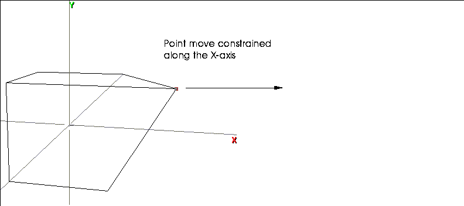

[N-World Contents] [Book Contents] [Prev] [Next] [Index]
Overview
N-Geometry is an integrated system for creating, modifying, and storing 3D objects. It is a window-based system that lets you create and modify objects interactively in the 3D editor.
Objects can be drawn either orthographically or in perspective. You can select the point of view, display backfacing polygons, and define other parameters that affect the display, such as hiding hidden lines.
Once you've created an object, you can manipulate all or part of it by choosing various operations from N-Geometry's menus.
The N-Geometry window provides smooth, dynamic control of the eyepoint. N-Geometry is capable of mimicking actual camera attributes, such as lens focal length, film format, angle, and point of view. N-Geometry is designed to work seamlessly with other programs in the N-World environment such as N-Dynamics (to animate objects) and N-Render (to color objects).
Using the windowing system and graphical input from a mouse, you can use one of the pre-defined commands to generate primitive polyhedra such as cubes or cylinders, then use a full range of geometric and topological operations on an object or any of its specific vertices, edges, or faces to customize it.
The Environment
The world in N-Geometry is a Cartesian coordinate space; the N-Geometry world is defined in terms of a starting point, known as the global origin, and a set of three mutually perpendicular directions, known as the major axes.
Any point in space can be uniquely defined by three numbers, the x, y, and z coordinates, which represent its distance from the three planes perpendicular to the major axes passing through the global origin. The three directions, together with the global origin, are called the global coordinate system, as shown in Figure 1.1.
In N-Geometry this coordinate system is "right-handed;" positive y represents "up," positive x is "right," and positive z is "forward."
Figure 1.1 The global coordinate system
While this global coordinate system is always in effect, it is possible for objects you create to have their own x, y, and z axes. Such coordinate systems are referred to as local coordinate systems. Local coordinate systems can have a different origin and their axes can point in different directions from the global coordinate system. Local coordinate systems can also be non-Cartesian.
The number of local coordinate systems is unlimited, but they are always defined in terms relative to the global coordinate system.
The Camera
To look at the objects that you create in N-Geometry, you need to use the camera; in fact, the only way that you can look at a scene is through the camera.
The camera is a special kind of object, in that you never see it, but it can be moved and modified in much the same way as other N-Geometry objects, and its motion can be choreographed with animation scripts created in N-Dynamics.
Also, you can specify that the camera take on certain characteristics so that the view angle matches that of known real-world camera formats. This means that you can create animations that match certain film formats.
When talking about the camera, there are two points in space that are often referred to: a point from which the scene is viewed, called the eyepoint, and a point toward which the camera is aimed, called the aimpoint. The distance between the eyepoint and the aimpoint is called the aim-distance, and the direction from the aimpoint to the eyepoint is called the camera direction.
Figure 1.2 Camera terminology
From the eyepoint, the camera takes in a certain region of global space that is then projected onto the window. The angle between the left and right sides of this pyramid is called the view angle. Because the window is rectangular, the shape of this region is a rectangular pyramid whose apex is at the eyepoint and whose sides project away from the eyepoint toward infinity.
The region that the camera sees does not actually extend all the way from the eyepoint to infinity. Rather, it extends from some distance in front of the eye, known as the hither distance, to some far off distance, known as the yon distance. The planes perpendicular to the line of sight passing through these points are called the hither clipping plane and yon clipping plane, respectively. Only objects that fall inside the pyramid between these two planes can be visible.
Figure 1.3 Hither and yon clipping planes
The region of visibility between the hither and yon clipping planes is called the viewing volume.
Objects
As shown in Figure 1.4, an object is actually composed of two parts:
Figure 1.4 Components of an object
The body can be one of two things:
The transformation matrix is a set of numbers that can modify the appearance of the object.
Body
If an object's body is a geobody, the object is referred to as a simple object even though the geobody itself can be quite complex.
A geobody is an entity that holds all the essential geometric and topological information of an object, as shown in Figure 1.5. It is what makes an object recognizable as a form-what makes a cube a cube. It is frequently built up from other geometric entities, called elements, but is itself self-contained.
A cube, for example, is a polyhedron comprised of six face elements, which in turn are defined by vertex elements located at particular points in space and topologically interconnected in a certain way by edge elements. Among the geobodies defined by N-Geometry are isolated points and line segments, wires (contiguous segments), and polyhedra.
Figure 1.5 Object with a geobody for its body
While a geobody is a unique entity, it cannot be viewed or manipulated in
N-Geometry without being instanced, that is, being the body of some object, as shown in Figure 1.6. It is possible for two (or more) objects to share a single geobody. A geobody which belongs to more than one object is said to be multi-instanced. (You can create a multi-instanced object with the Reinstance command, described elsewhere in this manual.)
Figure 1.6 Reinstanced objects
An object whose body is a group of objects is called a compound object. Each member of the group is an object complete with its own body and transformation matrix, and can in turn be either a simple or compound object, as shown in Figure 1.7. With repeated nesting, a single object can consist of hundreds of geobodies.
Figure 1.7 Compound object
Transformation Matrix
The transformation matrix modifies the apparent geometry of an object. An object can be made to look like it is in a location other than where the information in its body says it is. The matrix can also make objects look larger or smaller, stretched, or rotated.
When you modify the matrix, you are, in effect modifying the coordinate system in which the object is embedded. It does not affect the body of the object at all but only its appearance in the world. The raw data of a body exists in the local coordinate system of the body's object, which is initially coincident with the global coordinate system.
When you modify the transformation matrix of the object you separate the local coordinate system from the global coordinate system. For example, a polyhedron might have all its vertices centered around the origin. Applying a translation transformation to the polyhedron's object displaces the space in which the polyhedron is defined. The polyhedron's vertices are still centered around the local origin but are now far from the global origin because the local space has moved relative to the global coordinate system.
When there is no difference between the local coordinate space of an object and the global coordinate space (that is, when applying the object's transformation matrix leaves the object in the same position from which it started), the transformation matrix is said to be an identity matrix.
Each object, including an object that has been reinstanced, has a unique transformation matrix. This is what makes sharing geobodies feasible, since you can make a single geobody appear to be in different locations with different sizes or shapes simply by belonging to objects with different transformation matrices.
The matrix itself is an array of sixteen numbers that is used to change the drawn position of each point in an object. Because it is such a small data structure, it is easy to change and can be considered more volatile than the geometric information in the body. N-Dynamics, for example, replaces the values in the transformation matrices of animated objects with its own numbers.
An object can be forced into the global coordinate system by a process called Apply Transformation. This transfers all of the information in the object's transformation matrix into the raw data of the body. This action effectively shifts the local coordinate system out from underneath the body, thereby making the body coincide with the global coordinate system. The apparent position of an object becomes its home position.
Transform vs. Modify
The 3D editor lets you make many different types of changes to an object. While some changes can be made to an object, others can only be made to the body itself:
Many effects can be generated by changing an object's transformation matrix or changing the body itself (e.g., with functions that move, scale, or rotate an object or body).
Modifications to the body change the data in each primitive element of the body, while changes to the transformation matrix affect only the appearance of the object. It is easy to initialize (erase) the transformation matrix to undo any changes made to the appearance. Changes made to a body, however, are permanent, and can only be undone by subsequent opposite changes (using the Undo operation).
Operations are specified relative to some coordinate system:
Object Hierarchy
A multiple object can also be visualized as a hierarchy. In this form, the nesting of objects is displayed spread out in levels, with the containing object at the top. The containing object is called a top-level object. Objects that comprise the body of a top-level object are called inferiors, or inferior objects. Objects that have inferiors are referred to as the superior of those objects. Simple objects with no inferiors are often called terminal objects, because the tree structure ends with them.
Figure 1.8 shows the hierarchy of a top-level object, which is represented by the single rectangle at the top. It has for its body a list of objects. The objects that make up the list are represented by the four rectangles immediately below the top-level object.
The leftmost rectangle has for its body a geobody, in this case an icosahedron. The hexagonal shape between the object and body is a body-display-item (bdi) which is inserted and used by the 3D editor for storing display information.
The middle two inferior objects are instanced. They share the same geometric information, but their transformation matrices and bdis (represented by hexagons) are different. The two objects might look completely different from one another.
The rightmost inferior object is a compound object and is itself made up of a list of objects.
Figure 1.8 Hierarchy of a top-level object
The 3D Editor
When you first enter N-Geometry, you see the window-based work area, as shown in Figure 1.1. This work area, is referred to by various names including the 3D editor, the view window, or the geometry frame. You display and control the geometric objects you create or modify through the 3D editor.
Figure 1.1 Geometry frame
The following paragraphs give brief descriptions of the different parts of the N-Geometry window.
The Sensitivity Element Menu
Specifies what type of geometric element is highlighted in the 3D editor. You can work with the following types of elements:
The none entry deselects all elements, and collect option lets you select a group of elements on which you want to perform the same operation.
Once an element is highlighted, it can be selected so various operations can be performed on it. See the section "Selecting Elements," on page 1-34.
The View Window
Displays the camera's view of geometric objects you create or modify. The view window is a 2D view of the 3D environment.
The Camera Motion Menu
Lets you specify the different camera motions. See the section "Moving the Camera," on page 1-21 for a more in-depth description of the various types of camera movements.
The GeoMenus
By default, when you start N-Geometry, a long window, entitled GeoMenus, appears along the side of the N-Geometry window. The GeoMenus are grouped into four sets sections:
Figure 1.2 The GeoMenus window
When you see commands like (CLICK-L) on GeoMenus>File>New Object, it means to (CLICK-L) on the New Object command under the File section of the GeoMenus.
File
Use the commands on the File menu to create new primitives, load and save objects, export objects to other file formats, and to delete objects.
Camera
The Camera menu lets you define characteristics of the view window, save views, manipulate the camera, and toggle the display of overlays on the view window.
Object Display
The Object Display menu lets you set display characteristics for any object loaded into N-Geometry. Visibility, shading, backfacing, sensitivity, and so forth are all set using this menu.
Utilities
The Utilities menu lets you set your N-Geometry preferences, restructure objects, rename objects, display information on objects, and define custom menus.
The Mouse Monitor Window
The Mouse Monitor displays the current values of whatever the mouse is currently controlling, either the camera or an element in N-Geometry:
Figure 1.3 The Geometry Monitor menu
The elements displayed in the mouse monitor window change depending on the action you're performing in N-Geometry:
When moving the camera, the following values may be displayed:
Table 1.1 Camera parameters for the mouse monitor window
|
Parameter
|
Description
|
|---|
|
xe, ye, ze
|
X, Y, and Z coordinates of the camera eyepoint.
|
|
xa, ya, za
|
X, Y, and Z coordinates of the camera aimpoint.
|
|
azm alt rll
|
Azimuth, altitude, and roll (camera's orientation).
|
|
vu
|
View angle.
|
|
ht yn
|
Hither and yon plane values.
|
The values displayed in the mouse monitor window depend on which camera mode is selected from the camera sensitivity menu along the bottom of the N-Geometry window.
When editing an element in N-Geometry, the following values may be displayed:
Table 1.2 Camera parameters for the mouse monitor window
|
Parameter
|
Description
|
|---|
|
dx, dy, dz
|
Relative motion along X, Y, and Z axes.
|
|
dist
|
Relative single axis motion.
|
|
da, db, dc
|
Relative rotation around three axes.
|
|
ang
|
Relative single axis rotation.
|
|
xfac, yfac, zfac
|
Other 3-axis values (e.g., with Free Scale, shows scaling factor along each axis)
|
|
amt
|
Other single value (e.g. Scale along a single axis)
|
Commonly Performed Geometry Tasks
This section describes how to perform the tasks that you'll do over and over in N-Geometry (such as selecting objects, moving the camera, entering values, and specifying pathnames).
Left, Middle, and Right Mouse Clicks
The three-button mouse puts a lot of power literally at your fingertips. When you click on a command, it usually makes a difference which mouse button you click. If a command has periods after before and after it (a "dotted" command), it means that different mouse clicks have different effects:
Figure 1.4 Selecting a command
Here are some guidelines for understanding how operations are mapped to the mouse:
Consider the Extrude command, for example:
For other commands (for example, the XYZ Rotate command), left, middle, and right might let you specify an axis along which to perform the operation (e.g., left=X, middle=Y, and right=Z).
How can you keep track of what each mouse click does? As you move the cursor over a command, read the mouse documentation line at the bottom of the screen! If there are multiple options for a command, they are always described in the mouse documentation line.
Other Mouse Clicks
If you hold the (CTRL) key down when selecting an operation, you can specify a numeric value for an operation.
For example, if you wanted to extrude a face by an exact amount, you would (SHIFT-L) on the face, then (CTRL-L) on the Extrude command. A dialog box showing the face's current location would be displayed:
Figure 1.5 Specifying changes numerically
Enter a value for how far you want to extrude the face, then (CLICK-L) on Axis Move. The dialog box displayed for entering numeric arguments to an operation vary, depending on which parameters are required to execute the move.
Constraining Mouse Movement
You can constrain mouse movement when you are transforming or modifying an object interactively using the SHIFT key.
Try this:
1. Create a cube.
2. (SHIFT-L) on a point on the cube.
3. (CLICK-L) on Move.
- Hold down the SHIFT key and move the mouse left and right; the selected point moves only along the global X axis, as shown in Figure 1.6

Figure 1.6 Constraining mouse movement along a global axis
4. Let up on the SHIFT key to resume normal mouse movement.
The mouse is constrained to the initial direction of the mouse after you press the SHIFT key, so you can constrain movement along they Y axis (moving the mouse up or down) or the Z axis (holding the middle mouse button down).
Working with Object Lists
If you select an operation from the GeoMenus, you may need to select objects from an object list. An object list looks something like this (depending on which objects are loaded in N-Geometry):
Figure 1.7 Object list
In the dialog box above:
An object's relative position in the hierarchy is shown by how far it is indented.
- Note. An object's position in the object hierarchy is also displayed in the mouse documentation line. A quick glance at the description of the object can tell you its relative position in an object or group's hierarchy.
Working with Text Edit Boxes
At some point, you'll need to specify a name for an object, part, displacement, or pose. You name an element in a text edit box. For example, if you had collected one fact
Figure 1.8 A text edit box
To change the text in a text edit box:
Specifying Objects, Directories, & Projects
Some text edit boxes let you select objects or directories; for example, when you Export an object, you need to specify which object you want to export and which directory you want to save it in.
If, for example, you (CLICK-L) on Export, an object list appears.
Figure 1.9 Object list
You'd (CLICK-L) on the object you wanted to export, and get the following export menu:
Figure 1.10 Object list
The object you selected above would be displayed, along with your default directory (usually your home directory).
If you wanted to change which object you were saving, you could now (CLICK-L) on the text edit box to display the object list again.
To change the directory in which you want to save the object, you have three options:
Figure 1.11 Selecting a new directory
- A project is nothing more than a series of directories that you group together logically. If you are working on an animation project, you might create a project of directories in which to store the different elements (e.g., objects, scripts, images, maps, etc.).
- The Specify a new Directory command adds other directories to the list at the top of the menu; directories with asterisks ("*") next to them are temporary (not part of the project).
- When you choose Specify a new Directory, a blank text edit box appears; enter the name of the directory you want to add to the list of available directories:
Figure 1.12 Selecting a new directory
- The newly specified directory appears in the current directory list at the top of the projects menu. To make the directory part of a project, choose Edit Current Project, then highlight any directories you want to add to the project.
- Projects are described in more detail in the Getting Started manual.
Moving the Camera
You move the camera by selecting a camera mode (described in "Camera Motion Menu," on page 1-21) and moving the mouse. After you've selected a mode, you can move the camera by doing the following:
Constraining Camera Movement
The camera moves along the longitudes and latitudes of a vertically oriented globe that is centered about the aimpoint. Fixed-aim is enabled during a swing, so as the camera moves, it orients itself to remain fixed on the aimpoint. An object being viewed remains centered in the view window.
N-Geometry lets you constrain camera movements so that the camera responds to either vertical or horizontal movements of the mouse. This constraint is useful when you are trying to preserve a particular value.
To constrain mouse movement, hold down the CTRL key while you move the mouse during interactive camera operations; the camera moves only in the direction of the initial mouse movement. For example, if you hold down the CTRL key while you are in pan mode and move the mouse to the left or right, the up/down angle of the camera remains constant and the camera pans only left and right.
Camera Motion Menu
How the camera responds to the mouse movement is determined by the Camera Motion menu, which appears at the bottom of the View window, as shown in Figure 1.13.
Figure 1.13 The camera motion menu
zoom +
Interactively changes several camera parameters to adjust the camera's view angle.
- Note. While these two modes appear identical, the first changes the lens characteristic of the camera, while the second moves the camera object.
- By alternately zooming and using truck mode, you can adjust the perspective effects while keeping the size of the object on the screen relatively constant.
Figure 1.14 Hither and yon clipping planes
- Note. Remember that there are clipping planes for each of the three axes; all three are modified as you make adjustments with the mouse.
Rotate
Rotations are of two types: pans and swings. The type of motion executed depends on whether or not fixed-aim is selected.
Figure 1.15 Setting a new camera orientation
Translate
Linear translations of the camera are divided into moves and shifts.
Figure 1.16 Setting a new camera location
Camera Modifiers
The last two items on the Camera Motion menu are camera modifiers that can be turned on and off in conjunction with the Rotate and Translate camera motion types.
Global
If enabled, uses a global rather than a local coordinate system to determine rotation and motion axes for the camera. When global is enabled, the camera is moved along the global x, y, and z axes, and rotation ignores the camera's orientation.
If global is not enabled, a local coordinate system is in effect; the rotation and motion axes are determined by the camera's local x, y, and z axes, and the rotation depends upon the camera's orientation.
Fixed-aim
Makes the camera change its orientation during a move so the camera remains pointed at a particular aimpoint. (The aimpoint is the point at which the camera is aimed, often the center of an object.)
When fixed-aim is off, the aimpoint moves with the camera. Objects seems to "drift" in the view window.
To numerically specify an aimpoint, (CLICK-R) on fixed-aim to bring up the following menu:
Figure 1.17 Setting a new aim point
Camera Motions
The table below describes how the various options on the Camera Motion Menu can be combined to produce different kind of camera movement in N-Geometry:
Swing Global
The camera moves along the longitudes and latitudes of a vertically oriented globe that is centered about the aimpoint.
As the camera moves, it orients itself to remain fixed on the aimpoint. An object being viewed remains centered in the view window.
The motion axes are parallel to the global axes.
(This mode is especially helpful because it lets you view the object from any side.)
Figure 1.18 Swing global camera move
Swing Local
The camera moves along longitudes and latitudes of a globe centered around the aimpoint.
The rotation is based on the camera's orientation instead of the global coordinate system.
The motion axes are determined by the angle of the camera.
Figure 1.19 Swing local camera move
Pan Global
The camera remains stationary and rotates around its center as the mouse is moved.
The rotation axes are parallel to the global axes.
The camera does not reorient itself to remain aimed at the object; the aimpoint moves with the mouse.
An object that is being viewed appears to drift through the view window in a direction opposite to the mouse movement.
Figure 1.20 Pan global camera move
Pan Local
Pan local mode resembles pan global mode in that the camera remains stationary and rotates around its center.
The camera rotates on axes that are determined by the camera's orientation, not by the global axes. The rotation axes are determined by the camera's frame of reference and are not necessarily parallel to the global axes.
Figure 1.21 Pan local camera move
Move Global
The camera moves linearly along the global x, y, and z axes.
The camera changes its orientation to remain pointed at the aimpoint.
An object that is being viewed appears to move along one of the global axes while it remains centered in the view window.
Figure 1.22 Move global camera move
Move Local
Move local mode resembles move global mode except that the axes along which the mouse moves are determined by the camera's initial orientation.
The motion axes are not parallel to the displayed axes but are determined by the angle of the camera.

Figure 1.23 Move local camera move
Shift Global
The camera moves linearly along the global x, y, and z axes. The object appears to drift through the view window in a direction opposite to the mouse movement.
Figure 1.24 Shift global camera move
Shift Local
Shift local mode differs from shift global in that the axes along which the camera moves are determined by the camera's local coordinate system, not the global axes.
The motion axes are not parallel to the displayed axes but are determined by the camera's frame of reference.
Figure 1.25 Shift local camera move
Modifying Bodies
This section describes how to modify bodies by performing operations (as opposed to transformations) on selected elements. There are four types of body elements in geometry, which roughly correspond to the number of dimensions in that type of element:
The operations you can perform on those elements include moving, scaling, rotating, cutting, collapsing, beveling, extruding, mirroring, twisting, randomizing, and so forth.
You can perform operations on elements of a polyhedron or on the elements of a wire. The elements that make up a wire are called winged segments, which are equivalent to edges of a polyhedron, and nodes, which are similar to a polyhedron's vertices.
Selecting Elements
To select an element:
1. Select the element type you want to modify in the element sensitivity menu.
2. Move the mouse over the element you want to modify.
- Once you have selected an element type, moving the mouse over the object in the view window causes elements of that type to be highlighted (see Figure 1.26.)
Figure 1.26 Cube with face highlighted
3. When the element you want to modify is highlighted, (SHIFT-L) directly on the element.
The modify menu displayed is context sensitive; that is, only the operations that can be performed on the selected element type are displayed in the menu.
In most cases the element remains selected after each operation is executed, so you can do another operation on it without have to reselect the element.
Deselecting an Element
Once selected, an element stays selected until:
Collect Mode: Working with Several Elements at Once
You may find there are occasions when you want to perform the same geometric operation on one or more elements of the same type. There are two ways for you to do this:
Starting a Collection
To collect several elements of one type:
As an example of how to collect elements, assume you want to perform an operation on several faces.
1. (CLICK-R) on a faces in the element sensitivity menu.
- Note that collect is automatically highlighted in the element sensitivity menu.
2. (CLICK-L) on several faces.
- Continue to select faces until all the ones you want are selected.
- Note. Clicking on an already collected element removes it from the collection.
3. (CLICK-R) to complete the collection.
Figure 1.27 A collection of faces on a grid
- Note. (CTRL-R) temporarily halts collect mode. (You might use this, for example, if you want to move the object to select an element that is currently obscured.) You can execute any geometry command and then immediately return to collect mode.
Ending a Collection
There are two ways to complete a collection:
- Note. An operation done on a collected group does not always give the same result as when the operation is performed sequentially on individual elements.
Growing or Shrinking a Collection
To grow a collection, you must already have a collection started-(CLICK-L) on collect in the element sensitivity menu, then:
Figure 1.28 Growing a collection
You can grow collections of point, edges, or faces. Growing a collection is handy when you want to collect multiple elements that are obscured or that would require you to turn the camera repeatedly.
Using the Lasso to Collect Elements
You may collect elements whose normals are facing the camera (a "2D" collection) or all elements of the selected type, even though they're on the back of the object (a "3D" collection). To collect elements with a lasso:
Figure 1.29 A 2D collection of grid faces using the lasso
Figure 1.30 Collecting the same faces using (ALT+CTRL+SHIFT)-elements need only be touched by the lasso
Saving a Collection
You can save collections by making them a part. A part is a named collection of one or more elements of the same type. To create a part:
1. Create a collection.
2. (CLICK-R) to end collect mode.
3. (SHIFT-L) on the collection, then (CLICK-L) on Add to Part to make the collection a part.
- Enter a name for the part in the dialog box that appears
To reselect a part you have already created, choose one of the elements in that part, then (CLICK-L) on Parts on the body menu.
(CLICK-M) on Parts to open a menu that lets you do the following:
Moving Objects and Elements
You can move objects or elements by moving the mouse (interactively) or by specifying the amount of movement through a dialog (numerically).
Moving Objects with the Mouse
By default, you use the mouse to move an object. If the operation is in 3D, mouse movement is typically controlled as follows:
Moving Objects Using Numeric Menus
To specify the amounts precisely, use (CTRL-L), (CTRL-M), or (CTRL-R) while selecting the menu item. An appropriate menu appears to let you specify the amounts numerically:
Figure 1.31 Specifying changes numerically
To make specifying numeric parameters the default, go to the Utilities>Preferences>Element Edit and set Numeric Input Default to Yes. This menu item causes numeric value menus to come up each time you select a geometric operation. (In this mode, you can still specify mouse-controlled operation by holding the CTRL key when you select the operation.)
Moving Pop-up Windows
Sometimes a pop up is displayed over the N-Geometry window, preventing you from seeing or selecting objects in the screen.
To move a pop-up window:
1. Move the mouse over the pop-up window.
2. Press ALT+F7.
- The menu is highlighted in red.
3. Drag the menu to a new position using the mouse.
Magnet Moves
Certain operations let you manipulate not only the selected element but vertices that are near it. You can define a spherical area around an element so that as the element is manipulated, the vertices within the defined area are also influenced by the operation.
For example, as the selected vertex is pulled, the vertices within the defined area are pulled along with the selected vertex as if influenced by it. The effect of the influence is greatest on the vertices closest to the selected vertex and falls off for the vertices toward the outer edge of the sphere. The rate of fall off can also be controlled. The effect of the influence is 100% on the selected element and gradually decreases to no effect at the outer edge of the defined area.
To enable an operation to influence an area:
1. (SHIFT-L) on the element you want to modify.
2. (ALT-L) on Move.
- While the original element stays highlighted in the 3D editor, you select a second point in the scene (not necessarily on the same object), that defines the range of influence for the operation.
3. Move the mouse.
- Note how not only the originally selected element, but other vertices, move as well.
If you want to specify the area of influence numerically, hold down both the
ALT and CTRL keys when selecting the operation. This brings up the following menu, which is described in the following section:
Figure 1.32 Specifying an area of influence numerically
Defining an Area of Influence
There are three basic methods for determining the area of influence; two use an imaginary sphere to measure the area of influence, the third measures area along the surface of the selected body (which is particularly useful if you are working with a convoluted shape).
Figure 1.33 Measuring from the midpoint
- The sphere of influence tends to produce a more "bloated" or "puffy" appearance in a modified shape when using operations such as Move.
Figure 1.34 Measuring along the surface
- Because the area of influence is measured along the surface, modifying a shape with commands like Move tend to keep the shape of the object.
- Note. This method is most useful if you are performing an operation on an irregular surface.
The default values for these parameters can be found in Utilities>Preferences>Element Edit.
Operations That Need an Axis
Certain transformations and modifications (such as moves, extrudes, and rotations) give you the option of specifying an axis along or around which the operation is to occur. When selecting an operation that requires an axis to be chosen, the following menu is displayed:
Figure 1.35 Choosing a value for an axis
If, for example, you were to (CLICK-R) on Extrude with a face selected, you'd be presented with the menu above, so you could specify an axis along which the operation was to be performed.
Each of the entries on this menu is described below:
Operations That Need an Origin
Certain operations (such as Scale and Rotate), let you select a point from which to begin the operation. For example, if you rotate an object, you'll get different results if you rotate it around the object's center or rotate it around a point on the perimeter of the body.
In cases where an origin point has significance, the following menu is displayed, which lets you select the origin point:
Figure 1.36 Choosing an origin point
Shortcuts
Defining a Default Operation
N-Geometry has the concept of a "current default" operation. This is handy if you are using the same operation repetitively and don't want to select it from the menu every time.
To define the current default operation:
1. Select an element and perform the operation on it.
2. Move the mouse over an empty area of the N-Geometry window and use (CTRL+SHIFT-L).
- A message appears in the upper left corner of the 3D editor, telling you that the last operation you used is now the default operation.
3. (CTRL-L) on an element to use the current default operation.
- Once a default operation has been defined, you use (CTRL-L) as a shortcut for (SHIFT-L) + selecting the operation.
This shortcut is extremely useful when you are performing the same operation repeatedly on different elements (e.g., moving different points on a model).
- Note. After you've defined the current default operation, you can select a different element type (e.g., a point instead of a segment) and still use (CTRL-L) to apply the current default operation to the selected element.
Hotkeys
N-Geometry features a complete set of hot keys.
[N-World Contents] [Book Contents] [Prev] [Next] [Index]
 Another fine product from Nichimen documentation!
Another fine product from Nichimen documentation!
Copyright © 1996, Nichimen Graphics Corporation. All rights
reserved.